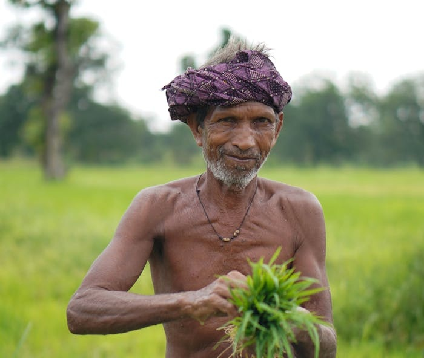
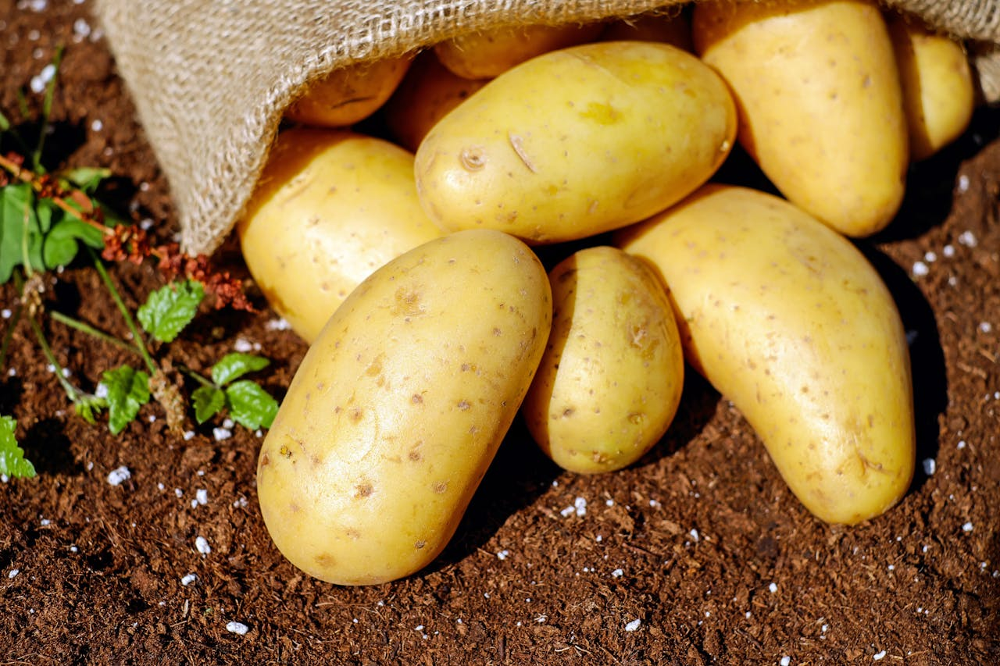

Our Blogs
Insights from SKB AGRI

August 26, 2025
Empowering Farmers with SKB Agri’s Organic Products
Learn how SKB Agri’s organic solutions are helping farmers improve soil health and crop productivity.
Read More

November 2, 2025
Revolutionizing Potato Farming with Organic Solutions
Discover how organic farming methods are transforming potato cultivation sustainably.
Read More
December 21, 2025
Achieving Pest-Free Brinjal Farming Naturally
See how SKB Agri’s organic products help farmers manage pests without harmful chemicals.
Read More